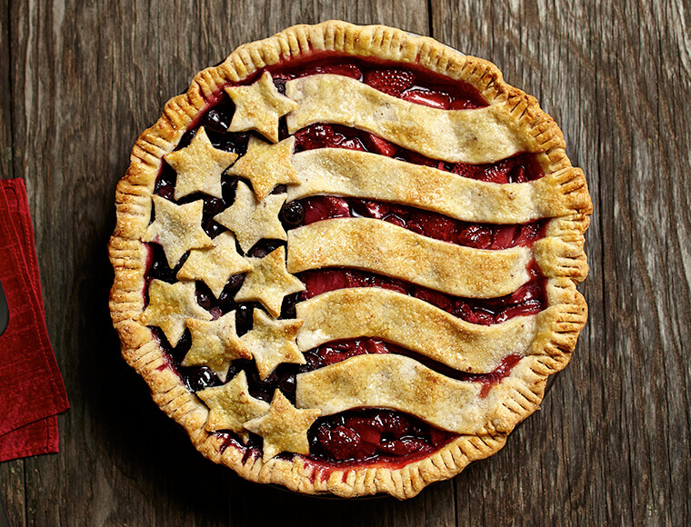

Pie

Descriptions
Fresh summer berries and a flaky butter and almond delcious patriotic pie
Ingredients
Crust
- 2 cups all-purpose flour
- 1/4 cup finely chopped almonds
- 1/4 teaspoon salt
- 2/3 cup cold land o lakes butter, cut into chunks
- 5 to 7 tablespoons ice water
Filling
- 1 (16-ounce) container (2 1/2 cups) fresh strawberries sliced
- 1 3/4 cups fresh raspberries
- 1/2 cup sugar
- 1/4 cup cornstarch
- 1 tablespoon water
- 1/2 teaspoon almond extract
Egg Wash
- 1 large o lakes egg, slightly beaten sanding sugar
Crust
- 2 cups all-purpose flour
- 1/4 cup finely chopped almonds
- 1/4 teaspoon salt
- 2/3 cup cold land o lakes butter, cut into chunks
- 5 to 7 tablespoons ice water
Filling
- 1 (16-ounce) container (2 1/2 cups) fresh strawberries sliced
- 1 3/4 cups fresh raspberries
- 1/2 cup sugar
- 1/4 cup cornstarch
- 1 tablespoon water
- 1/2 teaspoon almond extract
Egg Wash
- 1 large o lakes egg, slightly beaten sanding sugar